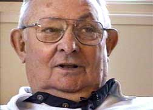
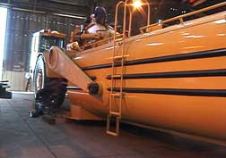
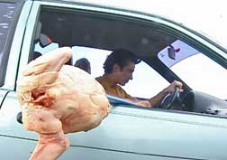
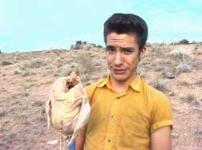
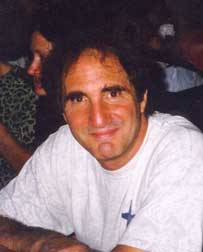

| Meet
the interviewees and other participants in these videos, at these
DVD release parties: Monday, December 6, 7pm, Page One Bookstore, 11018 Montgomery NE, Albuquerque. Tuesday, December 7, 7pm, St. Bede's Episcopal Church, Santa Fe, SE corner of St. Francis & San Mateo (just north of St. Michael's Drive). Requested donation is $20, which will get you a DVD (50% off retail!), and which will be used to help retire some of the still-outstanding costs of this project. (Below are press photos for the DVD, not necessarily interviewees who will be at DVD release parties) |
|
 |
Author Tony Hillerman,
interviewed in the video, "In Their
Own Words: 12 Veterans of World War Two," included in the DVD, "Five
Frightfully Five Videos." |
Holocaust survivor Hilde Caserio,
interviewed in the video, "We Were
There: Seven Survivors of the Holocaust," included in the DVD, "Five
Frightfully Five Videos." |
|
2003 National Youth Storytelling
Champion Tamarind King, interviewed in the video, "Reading
Frenzy: Teens Reveal the Thrill of Reading," included
in the DVD, "Five Frightfully Five Videos." |
|
Scraper tractor and "drop tank" manufactured by water haulage tank
manufacturer Mega Corporation in Albuquerque, NM, one of several manufacturers
featured in the video, "Six-Minute Manufacturing:
Glimpses of How It's Made," included in the DVD, "Five Frightfully Five
Videos." |
 |
 |
Daring experiment conducted
by resurrected crash test dummy "Doofus
Clueless" (actor Ryan Miera) in the video, "No
Bloodshed: The High Road to Understanding Driving Danger," included in the DVD, "Five
Frightfully Five Videos." |
Resurrected crash test dummy "Doofus
Clueless" (actor Ryan Miera)
prepares for a shocking demonstration in the video, "No
Bloodshed: The High Road to Understanding Driving Danger," included
in the DVD, "Five Frightfully Five Videos." |
 |
 |
Video producer Jim Terr of
Santa Fe, producer of videos and DVD, "Five
Frightfully Fine Videos." |